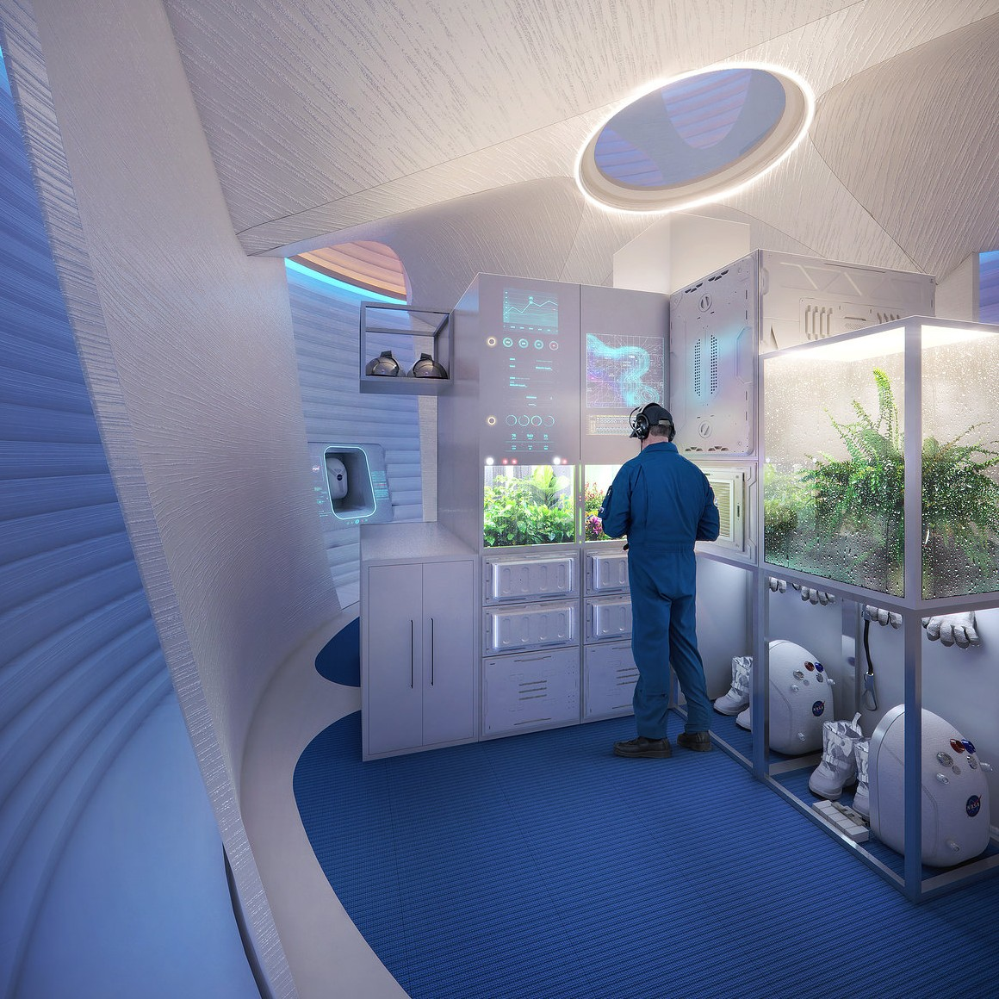

в цій лабораторії загалом аналізують марсіанський ґрунт,пил,лід і інші речі які є на марсі.Це робиться для того,щоб перевірити чи можливе життя на марсі.Також через те,що на марсі замість повітря вуглекислий газ тут вченіроблять з вуглекислого газу просте повітря.НасправдіМарс це дуже небезпечна планета через низьку гравітаціюрадіацію і нестачу сонячного світла тому тут такождосліджують як цьому протистояти